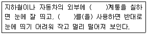
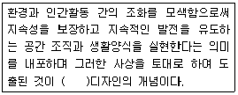
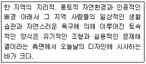
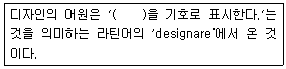
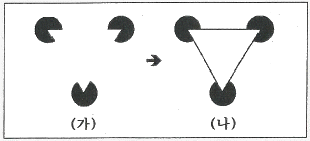

컬러리스트산업기사 (2018-08-19 기출문제)
1과목: 색채심리
1. 제품의 라이프사이클을 순서대로 나열한 것은?
- 성숙기 → 도입기 → 성장기 → 쇠퇴기
- 도입기 → 성장기 → 성숙기 → 쇠퇴기
- 쇠퇴기 → 도입기 → 성숙기 → 성장기
- 도입기 → 성숙기 → 성장기 → 쇠퇴기
(정답률: 94%)

2. 색채의 심리적 기능에 대한 설명 중 틀린 것은?
- 명도와 채도가 높은 색은 가깝게 보이지만 크기의 변화는 없어 보인다.
- 진출색과 후퇴색은 색채의 팽창과 수축과도 관계가 있다.
- 색상은 파장이 짧을수록 멀게 보이고, 파장이 길수록 가까워 보인다.
- 가까워 보이는 색을 진출색, 멀어 보이는 색을 후퇴색이라고 한다.
(정답률: 88%)
3. 국기에 대표적으로 사용되는 색채의 의미와 상징에 대한 설명 중 옳은 것은?
- 검정 – 회색, 박애, 사막
- 초록 – 강, 자유, 삼림
- 노랑 – 국부, 번영, 태양
- 파랑 – 국토, 희망, 이슬람교
(정답률: 60%)
4. 다음 중 소리와 색채의 연결이 잘못된 것은?
- 예리한 음 – 순색에 가까운 밝고 선명한 색
- 높은 음 – 탁한 노랑
- 낮은 음 – 저명도, 저채도의 어두운 색
- 탁음 – 채도가 낮은 무채색
(정답률: 93%)
5. 수술 중 잔상을 방지하기 위한 수술실의 벽면색으로 적합하지 않은 것은?
- W 계열
- G 계열
- BG 계열
- B 계열
(정답률: 78%)
6. 다음 중 명시도가 높은 색으로서 뾰족하고 날카로운 모양을 연상시키는 색채는?
- 빨강
- 노랑
- 녹색
- 회색
(정답률: 69%)
7. 다음 각 문화권의 선호색채에 대한 설명 중 옳은 것은?
- 중국인들은 전통적으로 유교문화의 영향을 받아 흰색과 청색을 중시하였다.
- 이스라엘 사람들은 전통적으로 노란색을 좋아하여 유대인의 별이라는 마크와 이름까지 생겨났다.
- 이슬람교 문화권에서는 흰색과 녹색을 선호하는 것을 많은 유물에서 볼 수 있다.
- 힌두교의 카스트 제도에서 빨강은 가장 고귀한 귀족을 의미한다.
(정답률: 64%)
8. 색채정보 수집방법에서 가장 많이 쓰이는 방법은?
- 실험 연구법
- 표본조사 연구법
- 현장 관찰법
- 패널 조사법
(정답률: 83%)
9. 다음 중 표적 마케팅의 단계에 해당되지 않는 것은?
- 시장 세분화
- 시장 표적화
- 시장의 위치선정
- 고객서비스 개발
(정답률: 80%)
10. 색채의 정서적 반응과 일치하지 않는 설명은?
- 색채의 시각적 효과는 객관적 해석에 의해 결정된다.
- 색채감각은 물체의 속성이 아니라 인간의 시신경계에서 결정된다.
- 색채는 대상의 윤곽과 실체를 쉽게 파악하는 데 유용한 정보를 제공한다.
- 색체에 대한 정서적 경험은 개인의 생활양식, 문화적 배경, 지역과 풍토의 영향을 받는다.
(정답률: 69%)
11. 다음 ( )에 순서대로 들어갈 적당한 말은?

- 한색, 난색
- 난색, 한색
- 고명도색, 고채도색
- 고채도색, 고명도색
(정답률: 72%)
12. 색채심리를 이용하여 지각범위가 좁아진 노인을 위한 공간 계획을 할 때 가장 고려되어야 할 것은?
- 색상대비
- 명도대비
- 채도대비
- 보색대비
(정답률: 63%)
13. 다음 중 색채계획 시 유행색에 가장 민감한 품목은?
- 자동차
- 패션용품
- 사무용품
- 가전제품
(정답률: 93%)
14. 특정국가, 지역의 문화 및 역사에 국한되지 않고 국제언어로 활용되는 색채의 대표적인 예들 중 거리가 먼 것은?
- 노랑 – 장애물 또는 위험물에 대한 경고
- 빨강 – 소방기구, 금지 표시
- 초록 – 구급장비, 상비약, 의약품
- 파랑 – 종교적 시설, 정숙, 도서관
(정답률: 85%)
15. 바둑알 제작 시 검정색 알을 흰색 알보다 조금 더 크게 만드는 이유와 관련한 색채심리현상은?
- 대비와 착시
- 대비와 잔상
- 조화와 착시
- 조화와 잔상
(정답률: 84%)
16. 색채마케팅 프로세스의 순서가 옳은 것은?
- 색채 DB화 → 색채 콘셉트 설정 → 시장, 소비자 조사 → 팔매촉진 전략 구축
- 색채 DB화 → 판매촉진 전략 구축 → 색채 콘셉트 설정 → 시장, 소비자 조사
- 시장, 소비자 조사 → 색채 콘셉트 설정 → 판매촉진 전략 구축 → 색채 DB화
- 시장, 소비자 조사 → 색채 DB화 → 판매촉진 전략 구축 → 색채 콘셉트 설정
(정답률: 78%)
17. 색채의 공감각 중 쓴맛을 느끼는 것과 관련이 없는 것은?
- 회색, 하양, 검정의 배색
- 한약재의 이미지 연상
- 케일주스의 이미지 연상
- 올리브그린, 마룬(maroon)의 배색
(정답률: 59%)
18. 항공, 해안 시설물의 안전색으로 가장 적합한 파장영역은?
- 750nm
- 600nm
- 480nm
- 400nm
(정답률: 47%)
19. 안전·보건표지에 사용되는 색채 중 그 용도가 ‘지시’에 해당하는 것은?
- 7.5R 4/14
- 5Y 8.5/12
- 2.5G 4/10
- 2.5PB 4/10
(정답률: 54%)
20. 다음 색채와 연상어의 연결이 틀린 것은?
- 노랑 – 위험, 혁명, 환희
- 초록 – 안정, 평화, 지성
- 파랑 – 명상, 냉정, 영원
- 보라 – 창조, 우아, 신비
(정답률: 68%)
2과목: 색채디자인
21. 색채계획 과정에서 색채변별능력, 색채조사 능력은 어느 단계에서 요구되는가?
- 색채환경분석 단계
- 색채심리분석 단계
- 색채전달계획 단계
- 디자인에 적용 단계
(정답률: 56%)
22. 다음 ( )안에 들어갈 용어는?

- 생태문화적
- 환경친화적
- 기술환경적
- 유기체적
(정답률: 85%)
23. 윌리엄 모리스가 디자인에 접목시키고자 했던 예술양식은?
- 바로크
- 로마네스크
- 고딕
- 로코코
(정답률: 54%)
24. 환경디자인에 관한 설명으로 잘못 연결된 것은?
- 스트리트 퍼니처 – 광고탑, 버스정류장, 식수대 등 도시의 표정을 결정하는 중요한 요소이다.
- 옥외광고판 – 기능적인 성격이 강하므로 심미적인 기능보다는 눈에 띄는 것이 가장 중요하다.
- 수퍼그래픽 – 짧은 시간 내 적은 비용으로 환경개선이 가능하다.
- 환경조형물 – 공익목적으로 설치된 조형물로 주변 환경과의 조화, 이용자의 미적용구충족이 요구된다.
(정답률: 55%)
25. 1960년대 초 미국적 물질주의 문화를 반영하여 전개되었던 대중예술의 한 경향은?
- 포스트모더니즘(postmodermism)
- 미니멀 아트(Minimal art)
- 옵아트(Op art)
- 팝아트(Pop art)
(정답률: 67%)
26. 다음 설명과 가장 관계 깊은 디자인은?

- 생태학적 디자인(ecological design)
- 버네큘러 디자인(vernacular design)
- 그린 디자인(green design)
- 환경적 디자인(environmental design)
(정답률: 39%)
27. 다음 디자인 과정의 순서가 옳게 나열된 것은?
- ① → ② → ③ → ④ → ⑤
- ① → ③ → ② → ⑤ → ④
- ③ → ① → ② → ⑤ → ④
- ③ → ① → ② → ④ → ⑤
(정답률: 57%)
28. 인쇄 시에 점들이 뭉쳐진 형태로 나타나는 스크린 인쇄법에서의 인쇄 실수를 가리키는 용어는?
- 모아레(moire)
- 앨리어싱(aliasing)
- 트랩(trap)
- 녹아웃(kockout)
(정답률: 34%)
29. 셀 애니메이션에 대한 설명으로 틀린 것은?
- 검은 종이 뒤에 빛을 비추어 절단된 틈으로 새어 나오는 빛을 한 컷씩 촬영하여 만든다.
- 디즈니의 미키마우스, 백설공주, 미야자키하야오의 토토로 등이 대표적 예이다.
- 동영상 효과를 내기 위하여 1초에 24장의 서로 다른 그림을 연속시킨 것이다.
- 셀 애니메이션은 배경 그림위에 투명한 셀로판지에 그려진 그림을 겹쳐 찍는 방법이다.
(정답률: 62%)
30. 색채계획에 있어서 환경색채에 대한 설명으로 거리가 먼 것은?
- 주변 환경과 다른 색상 설정
- 목적과 기능에 부합되는 색채 사용
- 지역적 특성을 반영한 색채 구성
- 4계절 변화에 적합한 색채
(정답률: 78%)
31. 다음 중 유니버설 디자인의 7원칙과 관련이 없는 것은?
- 대상에 대한 공평성
- 오류에 대한 포용력
- 복잡하고 감각적인 사용
- 적은 물리적 노력
(정답률: 77%)
32. 1950년대 미국에서 시작된 색채계획의 시대적 배경에 관한 설명 중 거리가 먼 것은?
- 과학 기술의 발전에 따른 생산방식의 공업화
- 색채의 생리적 효과를 활용한 색채조절에 의한 디자인 방식 주목
- 인공착색 재료와 착색기술의 발달
- 안전성과 기능성보다는 목적과 대상에 따라 다양성 적용
(정답률: 55%)
33. 다음 중 색채계획의 결과가 가장 오래지속되고 사후 관리가 가장 중요시되는 영역은?
- 제품색채계획
- 패션색채계획
- 환경색채계획
- 미용색채계획
(정답률: 81%)
34. 다자인 사조에 대한 설명으로 틀린 것은?
- 중세시대의 색채는 계급, 신분의 위계에 따라 결정되었다.
- 큐비즘의 작가 몬드리안은 원색의 대비와 색면분할을 통한 비례를 보여준다.
- 괴테는 ＜색채이론＞에서 파란색은 검은색이 밝아졌을 때 나타나는 색으로 보았다.
- 사실주의 화가들의 작품은 어둡고 무거운 톤의 색채가 주를 이룬다.
(정답률: 37%)
35. 디자인의 1차적 목적이 되는 것은?
- 생산성
- 기능성
- 심미성
- 가변성
(정답률: 61%)
36. ( )에 가장 적합한 용어는?

- 자연
- 실용
- 조형
- 계획
(정답률: 53%)
37. 서로 다라서 관련이 없는 요소를 결합시킨다는 의미로 공통의 유사점, 관련성을 찾아내고 동시에 아주 새로운 사고방법으로 2개의 것을 1개로 조립하는 것을 목표로 하는 이미지 전개 방법은?
- 브레인스토밍
- 시네틱스
- 입출력법
- 체크리스트법
(정답률: 75%)
38. 색채계획 시 고려해야 할 조건으로 적절하지 않은 것은?
- 대상이 차지하는 면적
- 자연광과 인공조명의 구분
- 대상과 보는 사람과의 거리
- 개인사용과 공동사용의 통일
(정답률: 79%)
39. 게슈탈트의 시지각의 원리 중에서 그림(가)를 보고 그림(나)와 같이 지각하려는 경향으로 가장 옳은 것은?

- 유사성의 요인
- 연속성의 요인
- 폐쇄성의 요인
- 근접성의 요인
(정답률: 71%)
40. 다음 중 개인의 색채가 아닌 것은?
- 의복
- 메이크업
- 커튼
- 액세서리
(정답률: 78%)
3과목: 섹채관리
41. 정확한 컬러 커뮤니케이션을 위해 측색값과 함께 기록되어야 하는 세부사항이 아닌 것은?
- 측정방법의 종류
- 표준광원의 종류
- 등색함수의 종류
- 색채재료의 물성
(정답률: 61%)
42. 다음 중 무기안료의 특징이 아닌 것은?
- 불투명하다.
- 천연무기안료와 합성무기안료로 구분된다.
- 착색력이 우수하여 색상이 선명하다.
- 내광성과 내열성이 우수하다.
(정답률: 60%)
43. 조명의 연색성에 관한 설명이 옳은 것은?
- 연색 평가수를 산출하는 데 기준이 되는 광원은 시험 광원에 다라 다르다.
- 연색 평가수는 K로 표기한다.
- 평균 연색 평가수의 계산에 사용하는 시험색은 5종류로 정한다.
- 연색 평가수 50은 그 광원의 연색성이 기준 광원과 동일한 것을 표시한다.
(정답률: 45%)
44. 도료를 물체에 칠하여 도막을 만드는 조작은?
- 도장
- 마름
- 다짐
- 조색
(정답률: 68%)
45. 구름이 얇고 고르게 낀 상태에서의 한낮의 태양광 색온도는?
- 12000K
- 9000K
- 6500K
- 2000K
(정답률: 62%)
46. 디지털 컬러와 관련한 설명 중 옳은 것은?
- IT8은 입력, 조정에 관계되는 기준 색표이지만, 출력과정에선 사용할 수 없다.
- IT8의 활용 시 CMY, RGB로 보이는 중간톤값의 변화는 신경 쓸 필요가 없다.
- White-balance는 백색 기준(절대 백색)을 정하는 것이다.
- Gamma는 컴퓨터 모니터 또는 이미지 전체의 기준 채도를 말한다.
(정답률: 47%)
47. 다음 중 CIELAB 색차식을 나타낸 것이 아닌 것은?(오류 신고가 접수된 문제입니다. 반드시 정답과 해설을 확인하시기 바랍니다.)
- △E*ab=[(△L*)2+(△a*)2+(△b*)2]1/2
- △E*ab=[(△L*)2-(△a*)2-(△b*)2]1/2
- △E*ab=[(L*1-L*0)2+a*1-a*0)2+(b*1-b*0)2]1/2
- △E*ab=[(△L*)2+(△C*ab)2+(△H*ab)2]1/2
(정답률: 39%)
48. 자외선을 흡수하여 일정한 파장의 가시광선을 형광으로 발하는 성질을 이용하여 종이, 합성수지, 펄프, 양모 등의 백색도를 높이기 위하여 사용되는 염료는?
- 합성염료
- 식용염료
- 천연염료
- 형광염료
(정답률: 76%)
49. 디지털 영상색채의 호환성을 확보하기 위하여 영상업체들이 모여 구성한 산업표준 기구는?
- 국제조명위원회(CIE)
- 국제표준기구(ISO)
- 국제색채조합(ICC)
- 국제통신연합(ITU)
(정답률: 35%)
50. 육안검색에 대한 설명이 옳은 것은?
- 광원의 종류와 무관하다.
- 육안검색의 측정각은 관찰자와 대상물의 각을 60°로만 한다.
- 일반적으로 D65 광원을 기준으로 한다.
- 직사광선 아래에서 검색한다.
(정답률: 78%)
51. 무기안료를 이용한 색재료가 아닌 것은?
- 도료
- 회화용 크레용
- 진사
- 인쇄잉크
(정답률: 39%)
52. 모니터 캐리브레이션에 관한 설명으로 틀린 것은?
- 자동밝기 조정기능이 있는 모니터는 해당기능을 활성화한 후 캘리브레이션을 시행한다.
- 흰색의 색상 목표값은 색온도 또는 xy로 설정하며, sRGB 색공간의 기준은 x:0.3127 y:0.3290 이다.
- 모니터 캘리브레이션은 흰색의 밝기, 흰색의 색상, 톤재현 특성, 검은색의 밝기를 교정한다.
- Rec.1886 기준으로 캘리브레이션 시행 시 목표 감마는 2.4로 설정한다.
(정답률: 29%)
53. 면광원에 대한 광도를 나타내며, 단위는 cd/m2로 표시하는 것은?
- 휘도
- 해상도
- 조도
- 전광속
(정답률: 58%)
54. 색에 관한 용어(KS A0064:2015)에서 규정한 틴트(tint)에 대한 설명으로 옳은 것은?
- 색필터의 중첩에 따라 보여지는 유채색의 변화
- 조명이 물체색을 보는 데 미치는 영향
- 흰색에 유채색이 혼합된 정도
- 표면색의 흰 정도를 일차원적으로 나타낸 수치
(정답률: 60%)
55. 기기를 이용한 측색의 결과 CIE 표준 데이터가 아닌 것은?
- H V/C
- Yxy
- L*a*b*
- L*C*h
(정답률: 68%)
56. 컴퓨터를 이용하여 정확한 측색과 분석을 수행함으로써 조색에 필요한 배합을 자동으로 산출하는 시스템은?
- CMY(Cyan, Magenta, Yellow)
- CCM(Computer Color Matching)
- CCD(Charge Coupled Device)
- CMYK(Cyan, Magenta, Yellow, Black)
(정답률: 81%)
57. 해상도가 1024×768인 이미지를 해상도가 다른 모니터에서 볼 때 이미지의 크기로 옳은 것은? (단, 업/다운스케일링을 하지 않음)
- 800×600 모니터 : 이미지가 화면 크기보다 작게 보인다.
- 1920×1080 모니터 : 이미지가 화면 크기보다 작게 보인다.
- 1280×1024 모니터 : 이미지가 화면 크기보다 크게 보인다.
- 1024×720 모니터 : 이미지가 화면크기와 동일하게 보인다.
(정답률: 66%)
58. 단색광궤적(스펙트럼 궤적)을 옳게 설명한 것은?
- 가시스펙트럽 양끝 파장의 단색광 자극의 기법혼색을 나타내는 색도 좌표 위의 선
- 각각의 파장에서 단색광 자극을 나타내는 점을 연결한 색좌표 위의 선
- 색자극을 복사량의 분광밀도에 따라 파장의 함수로 표시한 좌표 위의 선
- 시지각 특성에 따라 인식되는 빛 자체를 나타내는 좌표 위의 선
(정답률: 49%)
59. 측색기 사용 시 정확한 색채 측정을 위해 교정에 이용하는 것은?
- 북창주광
- 표준관측자
- 그레이 스케일
- 백색교정판
(정답률: 66%)
60. 분광 반사율 자체가 일치하여 어떠한 광원이나 관측자에게도 항상 같은 색으로 보이는 경우는?
- metamerism
- color inconstancy
- isomeric matching
- color appearance
(정답률: 53%)
4과목: 색채지각의이해
61. 헤링의 반대색설에 대한 설명으로 틀린 것은?
- 색의 기본 감각으로 빨강 – 초록, 노랑 – 파랑, 하양 – 검정의 3조로 반대색설을 가정했다.
- 단파장의 빛이 들어오면 노랑 – 파랑, 빨강, - 초록의 물질이 합성작용을 일으켜 초록, 노랑의 색각이 생긴다.
- 장파장의 빛이 들어오면 노랑 – 파랑, 빨강, - 초록의 물질이 분해작용을 일으켜 노랑, 빨강의 색각이 생긴다.
- 색채대립세포는 한 가지 색에 대해서는 흥분하고 다른 색에 대해서는 억제 반응을 보이는 세포이다.
(정답률: 44%)
62. 인상주의 점묘파 작품에 나타난 색의 혼합은?
- 병치혼합
- 계시혼합
- 감산혼합
- 회전홉합
(정답률: 79%)
63. 다음 중 빛에 대한 설명으로 틀린 것은?
- 장파장의 빛은 굴절률이 크고, 단파장의 빛은 굴절률이 작다.
- 물체색은 물체의 표면에서 빛이 반사되어 나타난 색이다.
- 단색광을 동일한 비율로 50% 정도만을 흡수하는 경우 물체는 중간 밝기의 회색을 띠게 된다.
- 빛이 물체에 닿았을 때 가시광선의 파장이 분해되어 반사, 흡수, 투과의 현상이 선택적으로 일어난다.
(정답률: 60%)
64. 빛이 뇌에 전달되는 과정에서 상의 초점이 맺히는 부분은?
- 맹점
- 중심와
- 홍채
- 수정체
(정답률: 47%)
65. 다음 중 색상대비가 일어나지 않는 경우는?
- 서구의 중세 스테인드글라스
- 수묵화의 전통적인 기법
- 우리나라의 전통적인 자수나 의복
- 야수파 화가 마티스의 작품
(정답률: 72%)
66. 빨간 색광에 백색광을 섞을 경우 나타나는 혼합색에 대한 설명 중 틀린 것은?
- 원래 색에 비해 명도가 높고 채도는 낮다.
- 원래 색에 비해 명도, 채도가 낮다.
- 빨간 색을 띤다.
- 가법혼색의 결과이다.
(정답률: 67%)
67. 색채지각의 착시현상으로 원반모양의 흑백그림을 고속으로 회전시켰을 때 흑백이지만 파스텔 톤의 연한 유채색 영상이 보이는 현상과 관련한 용어는?
- 색음현상
- 메카로 효과
- 애브니 효과
- 페히너 효과
(정답률: 50%)
68. 다음 중 가법혼색의 3원색이 아닌 것은?
- 빨강
- 노랑
- 녹색
- 파랑
(정답률: 77%)
69. 물리보색에 대한 설명 중 옳은 것은?
- 먼셀의 색상환에서 빨강의 보색은 녹색이다.
- 두 색광을 혼색했을 때 백색광이 되는 색이다.
- 회전판 위에 두 보색을 중간혼색하면 검정에 가까운 색이 된다.
- 감법혼색 시 두 보색은 서로 상쇄되어 자기 나름의 색을 갖게 된다.
(정답률: 25%)
70. 추상체 시각의 스펙트럼 민감도가 가장 높은 광원색은?
- 빨강
- 초록
- 파랑
- 보라
(정답률: 22%)
71. 붉은 색 물체의 표면에 광택감을 주었을 때 느껴지는 색채 감정의 변화로 옳은 것은?
- 중성색으로 느껴진다.
- 표면이 거칠게 느껴진다.
- 차갑게 느껴진다.
- 더욱 따뜻하게 느껴진다.
(정답률: 48%)
72. 자극이 이동해도 지속적으로 원자극과 유사한 색상이나 밝기를 나타나는 현상은?
- 대비현상
- 심리보색현상
- 음성잔상
- 양성 잔상
(정답률: 64%)
73. 다음 중 운동선수의 복장이나 경주용 자동차 외부의 색으로 적합한 것은?
- 밝고 채도가 높은 한색
- 밝고 채도가 높은 난색
- 밝고 채도가 낮은 한색
- 밝고 채도가 낮은 난색
(정답률: 79%)
74. 색의 진출, 후퇴 효과를 일으키는 색채 특성이 바르게 연결된 것은?
- 진출색 - 난색계, 고명도, 고채도
- 진출색 - 한색계, 저명도, 저채도
- 후퇴색 - 난색계, 고명도, 고채도
- 후퇴색 - 한색계, 고명도, 고채도
(정답률: 78%)
75. 같은 색이 주위의 색에 따라 색상, 명도, 채도가 다르게 보이는 현상은?
- 색의 대비
- 색의 분포
- 색의 강약
- 색의 조화
(정답률: 80%)
76. 빛의 특성에 대한 설명으로 틀린 것은?
- 파장이 긴 쪽이 붉은색으로 보이고 파장이 짧은 쪽이 푸른색으로 보인다.
- 햇빛과 같이 모든 파장이 유사한 강도를 갖는 빛을 백색광이라 한다.
- 백열전구(텅스텐빛)는 장파장에 비하여 단파장이 상대적으로 강하다.
- 회색으로 보이는 물체는 백색광 전체의 일률적인 빛의 감소에 의해서이다.
(정답률: 47%)
77. 다음 중 가장 화려한 느낌을 주는 색은?
- 고명도의 난색
- 고채도의 한색
- 고채도의 난색
- 저명도의 한색
(정답률: 64%)
78. 밝은 곳에서는 빨간 꽃이 잘 보이다가 어두운 곳에서는 파란 꽃이 더 잘 보이게 되는 현상은?
- 베졸드(Bezold) 현상
- 푸르킨예(Purkinje) 현상
- 프라운호퍼(Fraunhofer) 현상
- 영ㆍ헬름홀쯔(YoungㆍHelmholtz) 현상
(정답률: 81%)
79. 색의 동화현상에 대한 설명이 아닌 것은?
- 가늘고 촘촘한 줄무늬에서 쉽게 나타난다.
- 대비현상과는 반대되는 색채이다.
- 전파효과, 혼색효과, 줄눈효과라고도 부른다.
- 일정한 자극이 사라진 후에도 지속적으로 자극을 느낀다.
(정답률: 59%)
80. 연변대비에 대한 설명이 틀린 것은?
- 연변대비를 약화시키고자 할 때 두 색 사이의 테두리를 무채색으로 한다.
- 인접한 두 색의 경계부분에서 눈부심 효과(Glare Effect)가 일어난다.
- 무채색을 명도단계로 배열할 때 나타난다.
- 인접색이 저명도인 경계부분은 더 어두워 보인다.
(정답률: 22%)
5과목: 색채체계의이해
81. NCS색상환에 배열된 색상의 수는?
- 10색
- 20색
- 24색
- 40색
(정답률: 41%)
82. 다음 중 색채의 배열과 구성에서 지각적 등보성이 없는 것은?
- KS 표준색표
- Munsell Book of Color
- Pantone Color
- NCS
(정답률: 65%)
83. 오스트발트 색체계에 대한 설명으로 옳은 것은?
- 1942년 미국 CCA에서 제안한 CHM에는 24개의 기본색 외에 8개의 색을 추가해서 사용한다.
- 이상적으로 표현하고자 하는 모든 색채영역의 재현이 가능하다.
- 쉐뷰럴의 영향을 받은 색체계로 오스트발트 조화론으로 발전된다.
- 베버-폐히너의 법칙을 적용하여 동등한 시각거리를 표현하는 색단위들을 얻어내려 시도하였다.
(정답률: 28%)
84. 다음 중 L*a*b* 색체계에서 빨간색의 채도가 가장 높은 색도좌표는?
- +a* = 40
- -a* = 20
- +b* = 20
- -b* = 40
(정답률: 80%)
85. 다음의 NCS 표기 중 빨간색도의 양이 가장 많은 것은?
- R80B
- R60B
- R40B
- R20B
(정답률: 63%)
86. P.C.C.S 색체계의 설명으로 틀린 것은?
- 색상 : 적, 황, 녹, 청 4색상을 중심으로 24색상을 기본으로 한다.
- 명도 : 먼셀 명도를 0.5단계로 세분화하여 17단계로 구분한다.
- 채도 : 기호는 C를 붙여 9단계로 분할한다.
- 톤 : 명도와 채도의 복합개념이라 할 수 있다.
(정답률: 43%)
87. 배색의 효과에 대한 설명 중 적절하지 않은 것은?
- 회색과 흰색의 배색에 선명한 빨간색을 강조색으로 활용하여 경쾌한 느낌을 주었다.
- 회색 띤 파랑, 밝은 파랑, 진한 파랑을 이용하여 점진적이고 연속적인 느낌의 배색을 하였다.
- 짙은 회색, 은색, 짙은 파란색을 이용하여 도시적이고 사무적인 느낌의 배색을 하였다.
- 밝은 노란색, 밝은 분홍색, 밝은 자주색을 이용하여 개구쟁이 소년의 활동적인 느낌을 주었따.
(정답률: 50%)
88. 저드(Judd)의 색채 조화론에 대한 설명이 아닌 것은?
- 순색, 흰색, 검정, 명색조, 암색조, 톤 등이 기본이 된다.
- 색채조화는 질서 있는 계획에 따라 선택된 색의 배색이 생긴다.
- 관찰자에게 잘 알려져 있는 배색이 잘 조화 된다.
- 어떤 배색도 어느 정도 공통의 양상과 성질을 가진 것이라면 조화 된다.
(정답률: 34%)
89. 다음 중 식물에서 유래된 색명이 아닌 것은?
- 살구색
- 라벤더
- 라일락
- 세피아
(정답률: 71%)
90. CIE 색체계에 대한 설명 중 옳은 것은?
- 기준 관찰자를 두고 5°시야에서 관찰한다.
- X, L*값은 밝기를 나타내는 기호이다.
- Cyan, Magenta, Yellow의 3색광을 기준으로 한다.
- 측정되는 스펙트럼의 400nm ~ 700nm을 기준으로 한다.
(정답률: 35%)
91. 혼색계의 장점이 아닌 것은?
- 정확한 측정이 가능하다.
- 환경을 임의로 설정하여 측정할 수 있다.
- 수치로 표기되어 변색, 탈색 등의 물리적 영향이 없다.
- 지각적으로 일정하게 배열되어 있다.
(정답률: 36%)
92. 다음 중 일반적인 물체색으로 보여지는 검정에 대한 설명으로 옳은 것은?
- 오스트발트 색체계 : a
- L*a*b* 색체계 : L*값이 30
- Musell 색체계 : N값이 9
- NCS 색체계 : S9000-N
(정답률: 55%)
93. 강조배색에 대한 설명으로 틀린 것은?
- 색상의 자연스러운 이행, 명암의 변화등에서 그 예를 찾을 수 있다.
- 전체가 어두운 톤인 경우, 대조적인 고명도 색을 소량 첨가하는 배색을 하면 긴장감과 명쾌한 느낌을 줄 수 있다.
- 무채색이나 저채도의 회색 톤 등의 기조색과 대조관계에 있는 고채도 색상을 액센트 컬러로 배색한다.
- 액센트 컬러의 선택은 기조색과의 관계를 고려해야 한다.
(정답률: 66%)
94. NCS색체계에서 S4010-Y80R의 백색도는 얼마인가?
- 10
- 40
- 50
- 80
(정답률: 42%)
95. 한국산업표준(KS)의 관용색이름과 색의 3속성에 의한 표시의 연결이 옳은 것은?
- 벚꽃색 : 2.5R 9/2
- 토마토색 : 5R 3/6
- 우유색 : 5Y 8.5/14
- 초코릿색 : 7.5YR 8/4
(정답률: 46%)
96. 먼셀 색체계에서 N5와 비교한 N2의 상태는?
- 채도가 높은 상태이다.
- 채도가 낮은 상태이다.
- 명도가 높은 상태이다.
- 명도가 낮은 상태이다.
(정답률: 60%)
97. 관용색명에 관한 설명으로 옳은 것은?
- 색상, 명도, 채도를 표시하는 수식어를 특별히 정하여 표시하는 색명이다.
- 정량적이며 정확성을 가진 색명체계로 색채계획에 유용하다.
- 계통색명이라고도 한다.
- 동물, 식물, 광물, 지명, 인명 등의 이름을 따서 붙인다.
(정답률: 70%)
98. 토널 배색으로 나타낼 수 있는 배색 이미지는?
- 동적인, 화려한
- 단단한, 선명한
- 깨끗한, 맑은
- 절제된, 수수한
(정답률: 48%)
99. 색채 조화에 대한 설명으로 틀린 것은?
- 2색 또는 3색 이상의 배색에 질서를 부여하는 것이다.
- 조화로운 배색을 위해서는 여러 가지 배색의 질서를 알아야 한다.
- 배색의 형식과 그 평가와의 관계를 연구하는 분야이다.
- 색채조화의 보편적인 원칙에 의존하는 것이 좋은 배색계획이다.
(정답률: 73%)
100. 빛의 혼색실험을 기초로 한 정량적인 색체계는?
- NCS 색체계
- CIE 색체계
- DIN 색체계
- Munsell 색체계
(정답률: 64%)